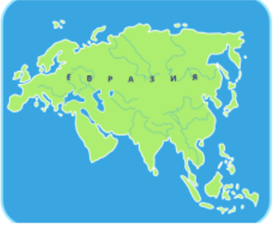

Южно-Африканская Республика (ЮАР) — государство на южной оконечности Африканского континента, уникальное в своём географическом, культурном и политическом разнообразии. Это парламентская республика с тремя столицами: Кейптаун (законодательная), Претория (исполнительная) и Блумфонтейн (судебная). Страна обладает богатейшими природными ресурсами, включая золото, платину, алмазы и редкоземельные металлы.
Подробнее>>Королевство Норвегия — суверенное унитарное государство, расположенное в Северной Европе на Скандинавском полуострове. Это конституционная монархия, где главой государства является король, а реальная исполнительная власть принадлежит правительству во главе с премьер-министром. Норвегия обладает уникальной географией: её протяжённая береговая линия изрезана знаменитыми фьордами, а значительную часть территории занимают горы и леса.
 Подробнее>>
Подробнее>>

Новая Зеландия — островное государство в юго-западной части Тихого океана, расположенное на двух крупных островах (Северный и Южный) и множестве мелких. Это государство в составе Содружества наций, где главой государства формально является британский монарх, представленный генерал-губернатором.
Подробнее>>Чили — государство на юго-западе Южной Америки, уникальной чертой которого является его чрезвычайно вытянутая форма. Оно занимает узкую полосу земли между Андами и Тихим океаном, простираясь с севера на юг на 4300 км, в то время как его средняя ширина не превышает 180 км.
 Подробнее>>
Подробнее>>
Государство Кувейт расположено на северо-востоке Аравийского полуострова и обладает выходом к Персидскому заливу.
Подробнее>>
Ангола, расположенная в Юго-Западной Африке, является одним из крупнейших и наиболее богатых природными ресурсами государств континента.
Подробнее>>
Аргентина, расположенная в юго-восточной части Южной Америки, является вторым по площади государством на континенте и одной из наиболее развитых его экономик.
Подробнее>>
Мексиканские Соединённые Штаты — федеративная республика в Северной Америке, занимающая уникальное положение между США и странами Центральной Америки.
Подробнее>>